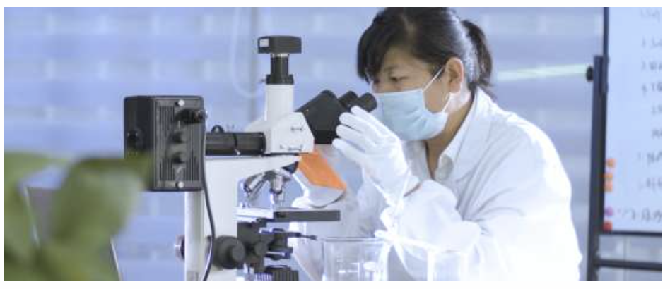

坦途高科研究基地
Tan Tu, High-tech, Scientific Research Base, Wuhan Hubei
陕西省天然沥青与公路再生工程技术研究中心，是由湖北坦途高科有限公司，长安大学，西安公路
研究院等单位联合共建的陕西省省级工程技术研究中心。中心致力于公路新材料、新技术和节能环保的公
路再生技术的研究和技术转换。
近年来，中心重点开展了天然沥青相关材料及应用方向的研究，迄今已开发天然沥青系列产品10余 项，围绕相关产品申报专利100余项，形成核心专利保护群;同时参与交通运输行业标准，中国公路学会 团体标准，及陕西、青海、新疆、甘肃、宁夏、山西、安徽、河南等地的地方标准的编制。产品技术水平 处于国内领先，国际创新水平。

- 5月 May, 2023 – 截止2023年5月获得授权专利58项，通过OMS，EMS，OHMSM等多项体系专业认证
- 5月 May, 2021 – 湖北坦途作为主编方，编制中国公路学会 团体标准《稳定型天然沥青改性沥青路面 技术指南》
- 11月 June, 2016 - 天然沥青研究成果首次荣登世界顶级学术刊物《科学》
- 12月 Dec, 2018 - 承担陕西省交通运输厅2017年交通科 研项目--《天然沥青高模量沥青混合料 应用技术》，该课题已于2018年12月 顺利通过验收。
- 10月 Oct, 2020 - 承担中铁建陕西高速公路有限公司2020年科 研课题项目《高模量沥青混合料在高速公路 重载交通路面中的应用研究》(20-43K)
- 1月 Jan, 2022 - 湖北坦途作为参编方编制的《高寒高海拔 地区高模量天然沥青混合料技术规程》于 2022年1月1日正式实施。
- 10月 Oct, 2020 - 承担陕西省交通运输厅2020年科研课 题《浇注式天然沥青混合料在钢桥面 铺装中的应用研究》(20-42K)
2020年9月，中国明确提出2030年“碳达峰”与2060年“碳中和”目标。2021年10月16日，第二届联合国全球可持续交通大会会议 正式通过《北京宣言》，将可持续交通目标纳入国家发展规划，更好落实联合国2030年可持续发展议程和《巴黎协定》
湖北坦途高科将持续加大技术研发投入力度，不断丰富产品，紧跟国家一带一路战略步伐，让天然沥青新型低碳环保可持续建筑材料造福区域沿线更多民众，持续扩张技术开发基地，布局全国，将高效节能理念与交通强国战略坚持到底。 点击获取联系合作方式